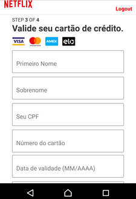

Cómo es la ciberseguridad en los países hispanohablantes?

Most threats can be prevented by using antivirus/antimalware software like Malwarebytes, Avast, Nortan, etc., but not McAfee nobody likes McAfee.
(McAfee was sold, and they runined it; So much that John McAfee himself
made a funny video of how it is hard to uninstall McAfee nowdays)
Ransomware
Data Breach
Malware

Brazilian mobile users hit with banking malware
Clasificado como trojan: BankBot.495.origin
Lo hace imitación de el pago sitio web.
Cuando los usuarios usan Bradesco, un banco, el troyano roba la información de la cuenta.
(see fake Netflix payment screen on right)
A Study by Symantec (Nortan Anti-virus)
A world study, by the cybersecurity company Symantec, based on: malware, spam, cyber-attacks, ransomware and cryptojacking. The most insecure countries are Brazil, Mexico and Venezuela.
Un estudio, de la empresa de ciberseguridad Symantec, basado en: malware, spam, ciberataques, ransomware y cryptojacking. Los países más inseguros son Brasil, México y Venezuela.

Mapa de ciberseguridad en el mundo.
Light = more protection,
Dark = less protection.
source: itu.int/dms_pub/itu-d/opb/str/D-STR-GCI.01-2018-PDF-E.pdf
El costo del delito cibernético en América Latina es de $90 mil millones por año!
In 2016, the Inter-American Development Bank issued a report putting the cost of cybercrime in Latin America at approximately US$90 billion per year. The report also found that the region in general suffers from a low level of public awareness when it comes to cybercrime.
In 2016, the Inter-American Development Bank issued a report putting the cost of cybercrime in Latin America at approximately US$90 billion per year. The report also found that the region in general suffers from a low level of public awareness when it comes to cybercrime.
In 2018, the Brazilian Congress passed a bill related to personal data protection.
Mexico’s establishes the Instituto Nacional de Transparencia, Acceso a la Información y Protección de Datos Personales as Mexico’s data protection authority.
Mexico’s establishes the Instituto Nacional de Transparencia, Acceso a la Información y Protección de Datos Personales as Mexico’s data protection authority.